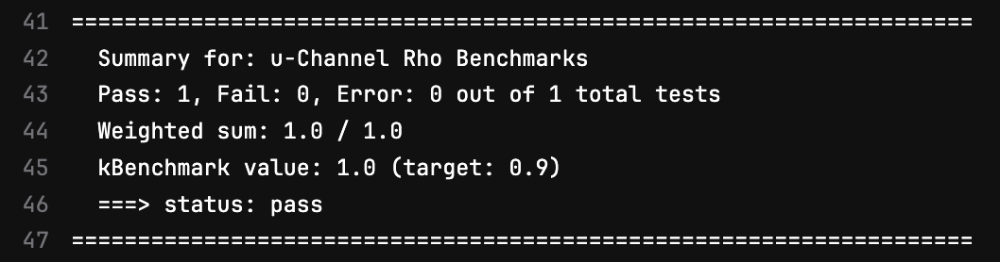

Exercise 4: Adding a Status Flag
Last updated on 2026-07-07 | Edit this page
Overview
Questions
- How can your benchmark indicate that there were detrimental changes to software or detector design?
Objectives
- Learn what a status flag is and how to add one to your benchmark
We’ve created a benchmark and tested it with GitLab’s CI tools. Now let’s explore one of the tools available to us to alert fellow developers when there has been a detrimental change in performance for your benchmark.
What is a Status Flag?
A typical benchmark might have 5 to 20 figures which each may or may not be useful in understanding detector and algorithm performance. Developers need rapid feedback when making changes to the tracking software, changing the detector geometry and so on.
As a benchmark developer, the way you can design this into your benchmark is with a status flag. Status flags are binary pass/fail flags which are summarized at the end of a pipeline. These allow other developers to quickly identify any detrimental changes they may have made to the EIC software environment.
At the completion of one of GitLab’s pipelines, the status flags from each benchmark are gathered and summarized like this one:

You can think about what quantities might be relevant to monitor. For example, since the u-channel rho benchmark is being used to evaluate the performance of the B0 trackers, this benchmark has a status flag assigned to the efficiency of rho reconstruction within the B0. In the April campaign, this efficiency was observed to be at roughly 95%. A flag was set such that if the efficiency dropped below 90%, it would indicate notable degredation of the performance of far-forward tracking.
Depending on your observable, you might set a status flag on:
- the mass width of a reconstructed particle
- reconstructed momentum resolution
- energy resolution in a calorimeter
Just remember that a status flag that is raised too often stops being alarming to developers. So try to leave some margin for error, and check in on the benchmark’s performance every so often.
Adding a Status Flag to Your Benchmark
To add a status flag, first define a function to set the benchmark
status. In this example, the following function was added to the
plotting macro
benchmarks/your_benchmark/macros/plot_rho_physics_benchmark.C:
CPP
///////////// Set benchmark status!
int setbenchstatus(double eff){
// create our test definition
common_bench::Test rho_reco_eff_test{
{
{"name", "rho_reconstruction_efficiency"},
{"title", "rho Reconstruction Efficiency for rho -> pi+pi- in the B0"},
{"description", "u-channel rho->pi+pi- reconstruction efficiency "},
{"quantity", "efficiency"},
{"target", "0.9"}
}
};
//this need to be consistent with the target above
double eff_target = 0.9;
if(eff<0 || eff>1){
rho_reco_eff_test.error(-1);
}else if(eff > eff_target){
rho_reco_eff_test.pass(eff);
}else{
rho_reco_eff_test.fail(eff);
}
// write out our test data
common_bench::write_test(rho_reco_eff_test, "./benchmark_output/u_rho_eff.json");
return 0;
}We also have to include the appropriate header. At the top of
plot_benchmark.C, please also add:
In the main plotting function, the reconstruction efficiency is calculated, then compared against the target:
CPP
minbineff = h_VM_mass_MC_etacut->FindBin(0.6);
maxbineff = h_VM_mass_MC_etacut->FindBin(1.0);
double reconstuctionEfficiency = (1.0*h_VM_mass_REC_etacut->Integral(minbineff,maxbineff))/(1.0*h_VM_mass_MC_etacut->Integral(minbineff,maxbineff));
//set the benchmark status:
setbenchstatus(reconstuctionEfficiency);Now every time the plotting macro is run, it will generate the
json file benchmark_output/u_rho_eff.json with
this status flag. In order propagate this flag through the pipeline, you
need also to create a top-level json file which will
collect all status flags in your benchmark.
In your benchmark directory, create a file titled
benchmark.json, or copy this
ready-made benchmark.json. The file should contain a name and title
for your benchmark, as well as a description:
JSON
{
"name": "YOUR BENCHMARK NAME",
"title": "YOUR BENCHMARK TITLE",
"description": "Benchmark for ...",
"target": "0.9"
}To keep the status flags as artifacts, also add these lines to the
end of the results rule in your config.yml
YAML
- echo "Finished, copying over json now"
- cp benchmark_output/u_rho_eff.json results/your_benchmark/
- echo "Finished copying!" The status flags from your benchmark should all collected and summarized in this stage of the pipeline too. To do this, include the following lines at the end of the stage:
Now push to GitHub!
BASH
git add benchmarks/your_benchmark/config.yml
git add benchmarks/your_benchmark/macros/plot_rho_physics_benchmark.C
git add benchmarks/your_benchmark/benchmark.json
git commit -m "added a status flag!"
git push origin pr/your_benchmark_<mylastname>Check the pipelines:
Exercise
- Try to identify several places where the status flag information is kept. It may take a while for these to run, so check this example pipeline.
The status flag information is stored in several places: the per-test
benchmark_output/u_rho_eff.json written by the plotting
macro, the top-level benchmark.json in your benchmark
directory, the copies kept as artifacts under
results/your_benchmark/, and the summary produced by
collect_tests.py at the finish stage of the
pipeline.
- Status flags are used to indicate detrimental changes to software/detector design
- Add a status flag to your benchmark to alert developers to changes in performance